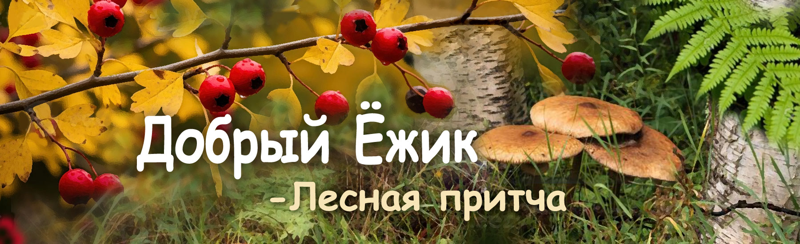

Сказки кота Филомура
бережно записанные его давним поклонником — крысом Мышелем

🍂 Добрый Ёжик (лесная притча)
Глава 1 | Глава 2 | Глава 3 | Глава 4
Глава I. Осень и мышонок
Осень в этом году выдалась щедрой. Лес дышал теплом и сладостью: жёлтые спелые груши глухо падали в мох, яблоки блестели румянцем, под листьями прятались большие сочные грибы. Воздух был густой, как мёд, и пах спелостью и покоем. Листья ложились на землю, как письма, которые никто не прочтёт. Мох был влажным, но ещё тёплым. Ветер — не злой, а задумчивый.
Под корнями старой груши, в уютной норке, жил ёжик по имени Тихон. Он жил один. Его жизнь была тихой — не простой, но и не трудной. Тихон знал: лес бывает суров, но он не обижался на него. Он просто научился жить в нём. У него была норка — его дом, его мир, место, где не нужно было бояться.
Норка была устроена на славу: вход узкий, чтобы не пробрался ни ветер, ни чужой глаз, а внутри — сухо, мягко, под стенками аккуратно сложены мох и сухие листья. В глубине норки находилась кладовочка. Там уже висели связки сушёных грибов, орешки, корешки, сладкие ягоды. На отдельной полочке — аккуратно разложенные на сухом мху наливные яблоки и дикие груши.
Тихон был хозяйственный. Каждый день он выходил в лес, обходил знакомые тропинки, собирал грибы, жёлуди, яблоки. Плоды он накалывал на свои колючки — удобно, как на тележку, — и, кряхтя, возвращался домой.
Он знал этот лес — не по рассказам, а по следам, запахам и шороху. Он знал, что лес бывает разным:
— летом ласковым,
— осенью сытым,
— весной — полным надежд,
— зимой — холодным и голодным.
Лес был и добрым, и жестоким, полным опасностей, хищников и ловушек. Поэтому Тихон был осторожен. Он никому не верил — не потому, что был злой, а потому что знал цену доверия. Он не просил — не из гордости, а потому что знал цену зависимости. Он не боялся — не потому что был храбрец, а потому что страх — роскошь, которую он себе не позволял.
Он был мудр.
Иногда, работая, Тихон любил поговорить сам с собой:
— Пока осень тёплая, — бормотал он, — нужно поторопиться. Потом снег пойдёт, плодов не будет. Зимой всё укроет. Кто не запасся — тот пропал.
Он останавливался, переводил дух, поправлял яблоко, которое соскользнуло с иголок.
— Живёшь один — на себя и рассчитывай, — рассуждал он. — Просить не у кого… да и незачем. У каждого свои заботы. Работай — и живи. Страх не поможет, жалость не накормит.
Так, размышляя, Тихон подошёл к старому кусту малины. И вдруг услышал писк — тонкий, пронзительный, жалобный. Он насторожился. Под листьями кто-то шевелился.
Тихон осторожно раздвинул траву и увидел мышонка — маленького, серого, с блестящими глазками и перебитой лапкой. Тот дышал часто, жалобно пищал, оглядываясь по сторонам, словно надеялся, что кто-то услышит.
Тихон знал: для любого ежа мышь — изысканное лакомство. Мир суров и несправедлив, в нём каждый выживает, как умеет. Почему бы его и не съесть?
Но Тихон не был голоден. И главное — он не хотел причинять боль.
Он замер, глядя на крошечное тельце, потом вздохнул. Мышонок дрожал и смотрел на него испуганно. И Тихону стало его жаль.
— Эх, малыш… — тихо сказал он. — Мир жесток, но не всякий должен быть жестоким. Не бойся — я помогу тебе.
Он осторожно поднял мышонка лапкой, прижал к себе и понёс в свою норку. Внутри положил его на мягкий мох, дал каплю воды, кусочек сладкого яблока, перевязал лапку тонкой травинкой.
Тихон просто делал то, что считал правильным. Он знал: доброта — не защита и не награда, и далеко не все её оценят. Но если можешь быть добрым — будь. Не ради кого-то. Ради себя.
День подошёл к концу. Солнце спряталось, спустилась прохлада, ветер шуршал в листьях. А в тёплой норке под корнями старой груши пахло яблоками и травой. Два маленьких зверька спали рядом, свернувшись калачиком.
🐭 Глава II. Неблагодарный мышонок
Жизнь Шурика в норке у Тихона была сытой и безмятежной. Тёплый мох, сладкие ягоды, орешки и корешки — всё, что нужно маленькому существу, чтобы забыть боль и страх. Лапка зажила, и вскоре он уже бегал, прыгал и беззаботно резвился.
Тихон о нём заботился. Он не спрашивал, не поучал, не ожидал благодарности — просто делился. Давал то, что имел, и радовался, когда Шурик ел с аппетитом. Для него это было естественно, как дыхание.
Но Шурик не понимал. Иногда, глядя на Тихона, он чувствовал беспокойство. Его маленький ум не находил простого объяснения: зачем кто-то делает добро, если взамен не получает ни выгоды, ни похвалы?
Иногда Шурик думал:
«Наверное, Тихон старый и слабый, боится меня. А может, просто глупый? Или хочет казаться правильным, чтобы все им восхищались. А может… может, он кормит меня, чтобы потом съесть?»
Эти мысли тревожили его и не давали покоя. Тихон был спокоен, добр и молчалив — а для испуганного сердца спокойствие кажется опасным.
И вот однажды Шурик решил: пора уходить. Тишина и уют Тихоновой норки ему наскучили. Ему было скучно жить без приключений, он хотел свободы. Он убеждал себя, что никому ничего не должен, что он независим, умный и ловкий.
Но про еду он не забыл — ведь в лесу холодно, а голод страшнее совести.
Когда Тихона не было дома, Шурик нашёл маленький мешочек и стал выбирать самые красивые и сладкие плоды. Он надкусывал каждую грушу, яблоко, орешек — пробовал, решал, что взять с собой. Самые вкусные складывал в мешок, остальные небрежно бросал в сторону.
Он не торопился: Тихон всегда возвращался поздно, а норка у него никогда не запиралась.
Когда мешочек наполнился под завязку, Шурик взвалил его на плечо и вышел. Даже не оглянулся. Он не поблагодарил и не попрощался — ему казалось, что это лишнее. Он думал: «Мне больше ничего от него не нужно. Мы всё равно никогда не встретимся».
Тем временем, вернувшись домой, Тихон увидел, что мышонка нет. Это его не огорчило — он понимал: Шурику нужна свобода, ведь он молод.
Но, заглянув в кладовку, Тихон не поверил глазам: надкушенные яблоки, погрызенные груши, расколотые орехи валялись на земле вперемешку с мусором. Всё, что он готовил на долгую зиму, теперь было испорчено.
Тихон молча сел у входа и долго смотрел на то, что осталось от его труда. Он понимал, что плоды не спасти — они сгниют, а зима уже на пороге.
Он поднялся, поправил соломку, прикрыл вход листьями и пошёл в лес — попробовать пополнить запас.
Но лес уже остыл. С каждым днём снег ложился плотнее, земля подмерзала, и ни ягод, ни грибов, ни желудей больше не было.
Тихон понял: впереди трудная, холодная зима.
Нет, он не сердился. Ни на Шурика, ни на себя. Он лишь с лёгкой грустью подумал:
«Мал он ещё. Глупый. Не понимал, что сделал. Сердиться — только себе настроение портить. Да и что толку?»
Он не жалел, что спас его. Он не ждал благодарности. Он просто тихо сказал себе:
«Я сделал, как считал правильным. А остальное — пусть будет, как будет.»
❄️ Глава III. Неожиданная находка
Зима стояла суровая. Снег лежал толстым, плотным слоем, словно белое покрывало тишины. Ветер не пел — он то стонал, то выл, как голодный волк, бродящий между спящими деревьями.
Исхудавший Тихон бродил по лесу, дрожа от холода. Он заглядывал в расщелины, в дупла, под коряги — в поисках хоть какой-то пищи. Запасы давно закончились. Он ел мало, двигался медленно, и оттого мёрз ещё сильнее.
За целый день ему попадалось разве что пару орешков да заиндевелая ягодка рябины. Порывы ветра срывали последние сухие листья, а метель безжалостно прятала под снегом редкие лесные дары. Ни грибов, ни желудей, ни насекомых. Лес был мёртв и беззвучен — только белая тишина и скрип его собственных шагов.
Это была самая тяжёлая зима в жизни Тихона. Он вспоминал прошлое: тёплые дни, щедрую осень, румяные яблоки в кладовке, сладкие груши, запах травы в норке… Но от воспоминаний не становится теплее.
Усталый и продрогший, он уже возвращался домой, когда вдруг под ногами заметил что-то серое, почти сливающееся со снегом. Сначала он подумал, что это сосновая шишка, и обрадовался случайной находке. Но, присмотревшись, замер.
Перед ним лежало крошечное живое существо — израненное, дрожащее, почти без дыхания. Серый комочек… Неужели это он?
Тихон узнал Шурика.
Мышонок не пищал, не просил о помощи — он был слишком слаб, чтобы издать хоть звук. Следы когтей на его спине говорили сами за себя: на него напала хищная птица. И теперь он медленно замерзал, одинокий, потерянный, никому не нужный.
Тихон стоял, глядя на него, и в памяти вспыхнули надкушенные груши, сгнившие яблоки, голод, холод и разочарование.
Он мог бы пройти мимо. Он мог бы сказать: «Ты сам виноват. Каждый отвечает за свои поступки». И никто бы не осудил его.
Но Тихон не чувствовал злобы. Только жалость — тихую, тёплую, как огонёк под снегом.
Он понимал: если оставить мышонка здесь, он не доживёт до утра.
Шурик приоткрыл глаза. Его взгляд был мутный, словно сквозь лёд. Он увидел Тихона, но не испугался. Он не мог говорить, только тихо заплакал — а слёзки тут же замерзали на его щеках, превращаясь в прозрачные кристаллики.
Тихон осторожно наклонился, взял Шурика лапками, прижал к себе, чтобы согреть, и понёс в свою норку.
Всю ночь он не сомкнул глаз. Он согревал мышонка своим дыханием, перевязывал его ранки, поил тёплой водой, отдал ему свой скромный ужин и тихо напевал под нос старую колыбельную — не для него, а просто чтобы не было страшно.
Прошло несколько долгих, тревожных дней. Постепенно Шурик стал поправляться. Снова начал ползать, потом ходить, а шёрстка стала мягкой и блестящей, как прежде.
А вот Тихон сдал. Голодные ночи, холод и бессонница отняли последние силы. К концу зимы он ослаб, охрип и, наконец, слёг с тяжёлой простудой.
Но даже лёжа, в бреду, он иногда улыбался, потому что слышал — рядом кто-то дышит, и этот кто-то жив.
🌷 Глава IV. Орешек добра
Тихон знал — его силы уходят. Он не жаловался, не звал на помощь. Да и кого звать? Помощи он не ждал — прожил жизнь честно и спокойно, и теперь принимал всё как есть.
Шурик к тому времени совсем поправился. Он снова был подвижным, юрким, игривым. Шнырял по норке, играл с ореховой скорлупкой, заглядывал в каждую щель, бегал, пищал — и почти не замечал Тихона, лежащего на подстилке из мха.
Тихон смотрел на него с тихой улыбкой. Он знал — Шурик скоро уйдёт. Стоит только солнечным лучам заиграть на льдинках, как предвестникам весны, и мышонок, почуяв тепло, побежит навстречу жизни.
Он не сердился и не грустил. Он понимал: таков круг — тот, кто молод, идёт вперёд. Он привязался к Шурику, и теперь его суета не раздражала, а радовала — она была дыханием жизни, что наполняло его дом.
И однажды утром Тихон проснулся — а норка была пуста. Шурик ушёл. Снова. Не сказав ни слова.
Тихон не обиделся. Он только вздохнул и подумал:
«Он жив. И это главное.»
Но тишина в норке была непривычной и холодной. Тихон закрыл глаза, прислушиваясь к дыханию земли.
А в это время Шурик бежал по протаявшей тропинке. Солнце блестело на снегу, сосульки сверкали, как стеклянные струны, всё вокруг играло и звенело от света.
Шурик радовался приходу весны. Но одна мысль — колючая и мучительная, как колючка, застрявшая в шёрстке, — не давала ему покоя. Он вспоминал старого, больного Тихона — того, кто спас его дважды.
Он пытался спорить с собой:
«Он стар. Всё равно не выживет. Я свободен, я ему ничего не должен. Он сам решил — спасти меня. Я не просил. Это был его выбор. А я выбираю жизнь. Это мой выбор. Разве не так?»
Но слова не грели.
Он незаметно дошёл до того места, где когда-то лежал в снегу, израненный и замерзающий. Там, где могла закончиться его жизнь.
И вдруг увидел рядом, на протаявшем пятачке, большую кедровую шишку. Полные сладкие орешки выглядывали из чешуек, словно сама весна подбросила ему ответ.
Шурик толкнул шишку. Она тяжело перевернулась и медленно покатилась. Он толкал её долго, не сдаваясь. Шёрстка слиплась от пота, лапки дрожали, но он не останавливался.
Наконец — норка. Знакомый вход под корнями старой груши. Шишка едва протиснулась внутрь.
Шурик вынул пару орешков, раскрошил их, как когда-то делал Тихон, заварил душистый чай из сушёных трав и мёда и тихонько поставил чашечку рядом с моховой подстилкой.
Тихон открыл глаза. Их взгляды встретились. Без слов.
Тихон понял. И слёзы — не боли, а радости — выступили на его глазах. Он слабо поднял лапку, и Шурик прижался к нему.
В норке пахло кедровыми орешками и весной. За стенами журчала талая вода. Жизнь возвращалась в лес.
Тихон закрыл глаза. Он знал — теперь всё хорошо. Он прожил жизнь не зря. Семена добра проросли.
И когда-нибудь великое, могучее дерево великодушия и бескорыстия украсит его любимый лес.

🌟 Вопросы и задания для юных читателей 🌟
1. О чём это глава? Расскажи историю в 3–5 предложениях.
2. Кто является главным героем этой главы? Опиши его (её) внешность, характер и настроение.
3. Выбери сцену, которая запомнилась тебе больше всего. Нарисуй её и добавь маленькие детали, которые ты считаешь важными.
4. Если бы ты мог(ла) задать главному герою один вопрос, каким бы он был? Запиши его — и попробуй ответить на него от имени этого героя.